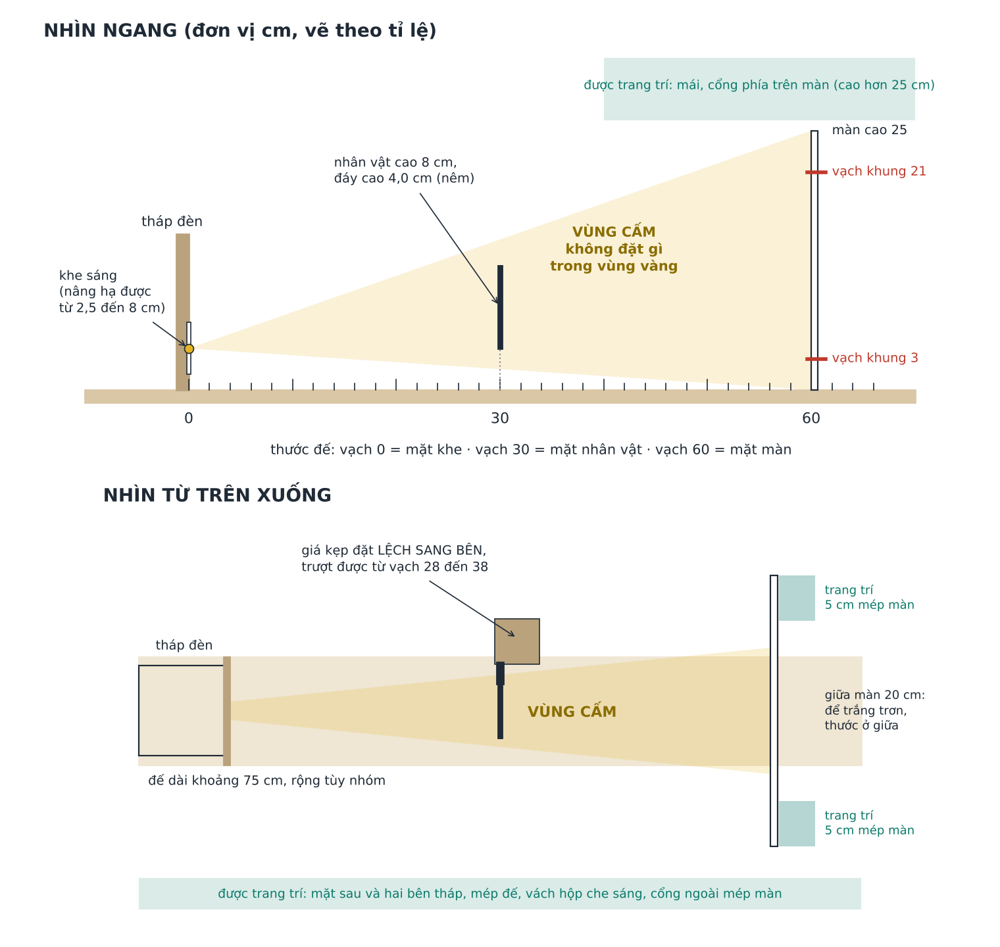

8TH2 · Toán 8 · Hệ quả Thalès
Chuẩn bị và tự làm sân khấu
Thứ Sáu đến Chủ nhật: lắp, thử, trao đổi và mang phần đã làm đến lớp.
Tải trọn bộ học sinh (PDF) · In hướng dẫn chế tạo hai mặt · Mở trên điện thoại hoặc in để dùng khi không có mạng. Không cần dùng kèm tài liệu cũ.
Vật liệu · 12 bước chế tạo · Tự kiểm A/B · Mang đến lớp · Thư viện hình
1. Chọn chuyện và chia việc
Nhóm có thể kể chuyện gánh trầu ra chợ, đêm làng và tiếng mõ, cọp vườn trầu, nhà bà Điểm hoặc một ý tưởng khác. Nếu kể chuyện lịch sử hay mượn hình của người khác, tìm nguồn để đối chiếu rồi ghi lại. Chia việc cho nhóm: điều phối/ghi nguồn, đế và giá kẹp, tháp đèn, màn, nhân vật/trang trí; ít bạn thì gộp việc. Một bạn làm, một bạn khác kiểm lại.
2. Chuẩn bị cho một sân khấu
- Bìa carton cứng: đế khoảng 75 × 15 cm, tháp 15 × 12 cm, đế tháp 10 × 10 cm và thanh chống.
- Bìa trắng đục 30 × 25 cm, bìa đen, mẫu 1:1, kẹp bướm, khối làm giá khoảng 5 × 5 × 4 cm, ê-ke, thước, bút, kéo, keo và băng keo.
- Đèn LED pin hoặc USB 5 V, pin/sạc dự phòng nếu có. Không dùng nến, laser hay đèn cắm điện 220 V để thử bóng; tránh chiếu vào mắt.
Tải mẫu in 1:1. Nếu không có máy in, dùng thước thật để vạch 0 / 30 / 60 cm lên đế, kẻ thước cao độ trên tháp và màn, rồi làm thẻ thử rộng 6 cm, cao 8 cm.
Nhắc nhau làm chậm và cẩn thận. Kê bìa trên mặt phẳng chắc; phần nào chưa quen hoặc thấy khó thì nhờ người lớn hỗ trợ. Cách làm khe bằng băng keo đen trên miếng nhựa trong ở bước 4 không cần dùng dao.

3. Lắp và thử từng phần
- In mẫu đúng cỡ. Chọn 100% / Kích thước thực, không «vừa trang». Đo thanh kiểm: khoảng 9,9–10,1 cm. Lệch thì chỉnh cài đặt trước khi in lại.
- Làm đế. Nối ba dải vạch đế thẳng hàng, chồng đúng phần cùng số. Kiểm bằng thước thật: từ vạch 0 đến vạch 30 là 30 cm.
- Dựng tháp đèn. Cắt rãnh rộng khoảng 2 cm từ mép trên, dừng cách mặt đế khoảng 1,5 cm. Dựng tháp có chân chống, dán thang cao độ dọc rãnh và để vạch 0 chạm mặt đế.
- Làm xe trượt và khe. Dán mẫu lên bìa cứng. Cần khe ngang cao 3 mm, dài 20 mm, đường chỉ đỏ qua tâm. Có thể dùng kéo mở ô rộng, phủ miếng nhựa trong và chừa khe bằng băng keo đen; nếu chọn cách cắt trực tiếp mà chưa quen, nhờ người lớn giúp.
- Gắn đèn. Gắn LED sát sau khe (không quá 5 mm) để đi cùng xe trượt; che ánh sáng lọt quanh, không che khe. Kiểm xe nâng hạ 3–8 cm và chỉ có một vệt sáng hẹp.
- Chuẩn bị màn. Dán thước dọc giữa bìa trắng, vạch 0 chạm đế; đặt mép trên hai dải khung tại 3 và 21 cm. Dán ô chân chống phía sau.
- Dựng màn. Đặt mặt màn ở vạch 60; dùng ê-ke kiểm màn thẳng đứng và vuông góc với thước đế.
- Gắn giá kẹp. Đặt giá lệch khỏi đường sáng, di chuyển được trong khoảng vạch 20–40. Kê nêm 4 cm, kẹp tai thẻ từ bên, rút nêm rồi đặt mặt thẻ ở vạch 30.
- Trang trí sau khi chiếu được bóng. Làm cổng, mái, cây hoặc cảnh phụ ngoài vùng ánh sáng; giữ khoảng giữa màn rộng 20 cm sạch và thấy rõ cả hai vạch. Trang trí nên tháo gọn để mang đi.
- Thử A và B. Giữ cùng một thẻ thử 6 × 8 cm ở vạch 30, đáy cao 4 cm; A dùng tâm khe 4 cm, B dùng tâm khe 6 cm. Tắt đèn rồi mới đổi. Đọc, ghi cả mép dưới và mép trên.
- Tự kiểm. Nhờ một bạn đọc và một bạn kiểm lại. Dùng bảng thử A/B hoặc chép vào vở: các vạch, độ cao khe, nêm, vị trí màn, hai mép A/B và điều nhóm muốn chỉnh. Nếu lệch nhiều, xem lần lượt vị trí, độ vuông và cách đọc; không điền số theo đáp án.
- Tập lắp lại. Đánh dấu đế, tháp, màn; tháo và gói lại, rồi thử lắp thêm một lần. Khoảng 10 phút là mốc tiện để vào lớp, không cần chạy đua.
4. Làm nhân vật
Dùng bìa đen đục; phần thân cao khoảng 8 cm, rộng không quá 6 cm, không kể tai kẹp. Chừa một đoạn phẳng ở đỉnh và đáy (mỗi đoạn khoảng 1 cm), tai kẹp ở cạnh bên, nét lớn, tránh khoét khe quá nhỏ. Nếu bóng rối khó đọc, dùng thẻ thử để đo và giữ rối cho phần kể chuyện.
5. Tự thử A/B trước Chủ nhật tối
Mỗi bạn thử tự lập tỉ lệ bằng hệ quả Thalès trước, rồi mở mục tự kiểm trong phiếu thử A/B. Nhìn ngang thước màn: mép rõ ghi [x; x]; mép nhòe ghi [a; b], số nhỏ trước. Giữ số đo thật kể cả khác dự báo. Thử mỗi cấu hình ít nhất một lần để biết phần nào cần chỉnh; không cần chạy đủ sáu lượt ở nhà. Gợi ý kiểm: bóng có một vệt, hai mép đọc được; nếu sai khác khoảng 0,5 cm trở lên, rà độ thẳng, cao độ, vạch đặt và góc nhìn.
Mở bảng ghi thử A/B · Xem sơ đồ Thalès.

Ảnh gửi thầy: chọn vài ảnh có ích như trạm đã lắp, bóng thẻ thử và số đo tự kiểm; giữ ảnh quá trình đã chụp. Ưu tiên dụng cụ, tay đang thao tác và sản phẩm; tránh để lộ mặt, tên hoặc địa chỉ. Không cần đăng công khai.
6. Thứ Hai 23/11, mang gì?
Mang sân khấu đã tháo gọn, nhân vật, hai thẻ thử 6 × 8 cm, bản phác, bản ghi thiết kế và số đo thử A/B, thước, ê-ke, bút và đèn có pin. Không cần làm báo cáo hay cài Scratch trước. Trong lớp mình sẽ lắp lại, dự báo, đo và cùng cải tiến; số đo ở nhà giữ riêng.
Bản hướng dẫn chi tiết (PDF) · 24 hình chuẩn bị (PDF) · Mẫu in 1:1 (PDF) · Xem việc trên lớp